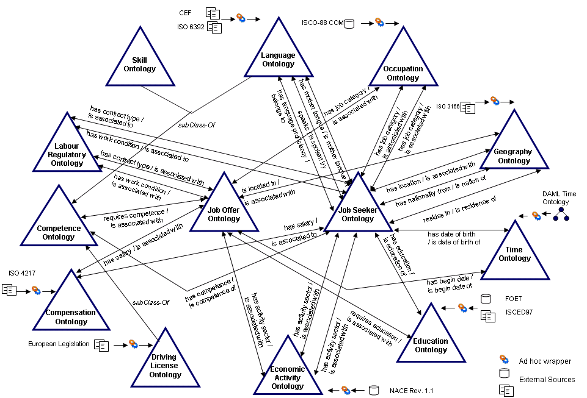

")
")
Human Resources Management Ontology
The Human Resources Management Ontology, will act as a common "language" in the form of a set of controlled vocabularies to describe the details of a job posting and the CV of a job seeker. The ontology was developed following the NeOn Methodology for Building Ontology Networks and with the ontology engineering tools WSMT and WebODE. Currently the ontology is available in WSML.
The Ontology is open source. The HRM ontology is available for its download in the following link (WSML) or in the following link (RDF(s)).
More Information
Authors: Boris Villazón-Terrazas, Jaime Ramírez and Asunción Gómez-Pérez
Contact:
This e-mail address is being protected from spambots. You need JavaScript enabled to view it
Overview
The ontology described in this section will act as a common "language" in the form of a set of controlled vocabularies to describe the details of a job posting and the CV of a job seeker. The ontology was developed following the NeOn Methodology for Building Ontology Networks and with the ontology engineering tools WSMT and WebODE. The ontology is composed of thirteen modular ontologies: Competence, Compensation, Driving License, Economic Activity, Education, Geography, Job Offer, Job Seeker, Labour Regulatory, Language, Occupation, Skill and Time. The main subontologies are the Job Offer and Job Seeker, which are intended to represent the structure of a job posting and a CV respectively. While these two subontologies were built taking as a starting point some HR-XML recommendations, the other subontologies were derived from some available international standards (like NACE, ISCO-88 (COM), FOET, etc.), Employment Services classifications and international codes (like ISO 3166, ISO 6392, etc.) that best fit the European requirements.The figure below presents these thirteen modular ontologies (each ontology is represented by a triangle). Ten of them were obtained after wrapping the original format of the standard/classification, using ad hoc translator or wrapper for each standard/classification.

In order to make possible the enrichment of the standards, it was necessary to import them into the ontology engineering tool WebODE. This process consisted in implementing the necessary conversions mechanisms for transforming the standards into WebODE's knowledge model. For this purpose we developed for each standard/classification an ad hoc translator (wrapper) that transformed all the data stored in external resources into WebODE's knowledge model. Next, these standards/classifications can be exported into ontologies expressed in WSML format by using an export utility of WebODE.
Once we transformed the standards into WSML ontologies, the next step was to enrich them introducing concept attributes and ad hoc relationships between ontology concepts of the same or different taxonomies. We performed this task doing the following. We created from scratch the Job Seeker Ontology (models the job seeker and his/her CV information), and the Job Offer Ontology (models the job vacancy, job offer and employer information) following some HR-XML recommendations. Moreover, we defined relationships between the concepts of the Job Seeker and Job Offer Ontologies and the concepts defined in the standard/classification based ontologies.
Next we provide the conceptualization of the mentioned ontologies.
- Job Seeker Ontology. This ontology models knowledge of job seeker and CV information used in the SEEMP Project. The Job Seeker Ontology imports concepts from the education ontology, language ontology, economic activity ontology, compensation ontology, geography ontology, driving license ontology, labour regulatory ontology and skill ontology, and these imported concepts are used to connect the Job Seeker Ontology with the other ontologies. Examples of the relationships can be: 'Job Seeker has driving license Driving License' (with the Driving License concept from the Driving License Ontology), 'Job Seeker has education Education' (with the Education concept from the Education Ontology), 'Job Seeker has mother tongue Language' (with the Language concept from the Language Ontology), etc.
- Job Offer Ontology. This ontology models knowledge of job vacancy, employer and job offer information used in the SEEMP Project. The Job Offer Ontology imports concepts from the education ontology, language ontology, economic activity ontology, compensation ontology, geography ontology, driving license ontology, labour regulatory ontology and skill ontology, and these imported concepts are used to connect the Job Offer Ontology with the other ontologies. Examples of the relationships can be: 'Job Vacancy requires driving license Driving License' (with the Driving License concept from the Driving License Ontology), etc.
- Compensation Ontology. This ontology models knowledge of wages and salaries used in the SEEMP Project. It is based on the ISO 4217. The ISO 4217 is expressed in HTML format, and it is a list of 254 currency names and codes. The resultant Compensation Ontology has 2 concepts: Currency and Salary. For every currency element specified in the ISO 4217 a different instance of the Currency concept is defined. So, the Currency concept has 254 instances. An example instance of the Currency concept is UNITED STATES - US Dollar. The ad hoc relations defined in this ontology are has currency between the Salary and Currency concepts, and its inverse one. The Currency concept has the following instance attributes: Numeric code, Name, Entity and Alphabetic Code.
- Driving License Ontology. This ontology models knowledge of Driving License domain. It is based on the levels recognized by the European Legislation. This classification is expressed in HTML format and it is a list of 12 kinds of driving licenses. The resultant Driving License Ontology just has the Driving License concept; and for every kind of driving license specified in the European Legislation a different instance of the Driving License concept is defined. An example instance of the Driving License concept is A1 - Light weight motorcycle. The Driving License concept has two relations: 'Driving License is associated with Job Vacancy' (with the Job Vacancy concept from the Job Offer Ontology) and 'Driving License is driving license of Job Seeker' (with the Job Seeker concept from the Job Seeker Ontology).The Driving License concept has the following instance attributes: Name and Description.
- Economic Activity Ontology. This ontology models knowledge of economic activities and sectors. It is based on the NACE Rev. 1.1 . This standard is expressed in MS Access database format and it is a classification of 849 economic activities. The resultant Economic Activity Ontology has 849 concepts. In this case we have defined a concept for every element of the NACE taxonomy in order to preserve the hierarchy. In the Economic Activity Ontology, the most general concept is the Activity concept. This concept is organized in the taxonomy based on the NACE. The Activity concept has four relations: 'Activity is associated with Objective' (with the Objective concept from Job Seeker Ontology), 'Activity is associated with Offered Work Experience' (with the Offered Work Experience concept from Job Seeker Ontology), 'Activity is associated with Job Vacancy' (with the Job Vacancy concept from Job Offer Ontology) and 'Activity is associated with Requested Work Experience' (with the Requested Work Experience concept from Job Offer Ontology).
- Occupation Ontology. This ontology models knowledge of occupations and job categories. It is based on the ISCO-88 (COM). ISCO-88 (COM) is expressed in MS Access database format. ISCO-88 (COM) is a classification of 520 occupations. The resultant Occupation Ontology has 520 concepts. In this case we have defined a concept for every element of the ISCO taxonomy in order to preserve the hierarchy. This ontology defines a concept taxonomy based on the aforementioned standard, in which the most general concept is the Occupation concept. The Occupation concept has four binary relations: 'Occupation is associated with Objective' (with the Objective concept from the Job Seeker Ontology), 'Occupation is associated with Offered Work Experience' (with the Offered Work Experience concept from the Job Seeker Ontology), 'Occupation is associated with Job Vacancy' (with the Job Vacancy concept from the Job Offer Ontology) and 'Occupation is associated with Requested Work Experience' (with the Requested Work Experience concept from the Job Offer Ontology). The Occupation concept has the following class attributes: Code, Description, Level and Name.
- Education Ontology. This ontology models knowledge of education level and education fields. The education fields are based on the FOET and the education levels are based on the ISCED97 (International Standard Classification of Education); both of them are expressed in MS Access database format. FOET has 127 education fields and ISCED97 has 7 education levels. The resultant Education Ontology has 130 concepts. For the education levels we have defined the Education Level concept; and for every education level specified in ISCED97 a different instance of the Education Level concept is defined. For the education fields we have defined a concept for every element of the FOET taxonomy in order to preserve the hierarchy. The ad hoc relations specified for each concept are those relations whose domain is the concept. For example, the concept Education has four binary relations: 'Education has education level Education Level', 'Education has education field Education Field', 'Education is associated with Job Vacancy' (with the Job Vacancy concept from the Job Offer Ontology) and 'Education is education of Job Seeker' (with the Job Seeker concept from the Job Seeker Ontology). The Education Field concept has the following class attributes: Code, Definition, Description, Excludes, Includes and Level.
- Geography Ontology. This ontology is based on the ISO 3166 country codes extended with continents and regions. The ISO 3166 is expressed in XML format; Continent and Region classifications are stored in ORACLE database. The ISO 3166 has 244 country codes and names; Region classification has 367 regions and Continent classification has 9 continents. The resultant Geography Ontology has four concepts, a Location as main concept, which is split into three subclasses: Continent, Region and Country. For every country element specified in the ISO 3166 a different instance of the Country concept is defined, so the Country concept has 244 instances. For every region element specified in the Region classification a different instance of the Region concept is defined, so the Region concept has 367 regions. Finally for every continent element specified in the Continent classification a different instance of the Continent concept is defined. An example instance of the Continent concept is EU - Europe. An example instance of the Country concept is SPAIN - ES. An example instance of the Region concept is Galicia. The Country concept has four binary relations: 'Country is nation of Job Seeker' (with the Job Seeker concept from the Job Seeker Ontology), 'Country is residence of Job Seeker' (with the Job Seeker concept from the Job Seeker Ontology), 'Country is located in Continent' and 'Country has region Region'. The Country concept has the following instance attributes: Name and Code.
- Labour Regulatory Ontology. This ontology is inspired on some Employment Services classifications, ContracTypes and WorkRuleTypes. ContractTypes classification has 10 contract types and WorkRuleTypes has 9 work rule types. The resultant Labour Regulatory Ontology has 2 concepts. For every type of work condition or contract type considered, a different instance of one of these two concepts (Contract Type or Work Condition) is included in the ontology. An example instance of the Contract Type concept is Autonomous. An example instance of the Work Condition concept is Partial time. The Work Condition concept has 2 binary relations: 'Work Condition is associated to Objective' (with the Objective concept from the Job Seeker Ontology) and 'Work Condition is associated with Job Vacancy' (with the Job Vacancy concept from the Job Offer Ontology). The Contract Type concept has two binary relations: 'Contract Type is associated to Objective' (with the Objective concept from the Job Seeker Ontology) and 'Contract Type is associated with Job Vacancy' (with the Job Vacancy concept from the Job Offer Ontology). The Contract Type has the following instance attributes: Name and Description.
- Language Ontology. This ontology is based on the ISO 6392 and the Common European Framework of Reference (CEF) . The ISO 6392 is expressed in HTML format and CEF is a description in PDF format. The ISO 6392 has 490 language codes and CEF has 6 language levels. The resultant Language Ontology has 3 concepts: Language, Language Level and Language Proficiency. For every language element specified in the ISO 6392 a different instance of the Language concept is defined, so the Language concept has 490 instances. For every language level element specified in the CEF a different instance of the Language Level concept is defined, so the Language Level concept has 6 instances. An example instance of the Language concept is eng - English. An example instance of the Language Level concept is A2 - Basic User. The Language concept has three relations: 'Language is mother tongue of Job Seeker' (with the Job Seeker concept from the Job Seeker Ontology), 'Language is spoken by Job Seeker' (with the Job Seeker concept from the Job Seeker Ontology) and 'Language is evaluated by Language Proficiency' (with the Language Proficiency concept from the Language Ontology). The Language concept has the following instance attributes: Name and Code.
- Skill Ontology. Mainly, this ontology models knowledge of Information Technology (IT) Skills and Organisational skills. It was built from scratch taking as reference the skills and abilities requested by the IT employment market. This classification has 131 skills.
- Competence Ontology. This ontology defines a concept called Competence as a super class of the imported concepts Skill, Language Proficiency and Driving License. The ad hoc relations specified for each concept are those relations whose domain is the concept. The Competence concept has three binary relations: 'Competence is associated with Vacancy' (with the Vacancy concept from the Job Offer Ontology); 'Competence is competence of Candidacy' (with the Candidacy concept from the Job Seeker Ontology) and 'Competence requires Education' (with the Education concept from the Education Ontology).
- Time Ontology. This ontology is based on DAML ontology, which is expressed in OWL format. The main concepts of this ontology are Instant and Interval, which are subclasses of Temporal Entity. Instant is linked to Interval through the properties of begins, ends, inside and begins or in. Instant is also linked to an instant temporal description, which is a concept with the properties of second, minute, hour, day, month, year and time zone. Interval has the subclass proper interval, which is related with itself through the relations 'interval equals', 'interval before', 'interval starts or finishes', etc. Proper intervals can be concatenated through the relation 'concatenation'.
Finally we present the ontology statistics. The ontology is composed of thirteen modular ontologies. The ontology has 3206 concepts, 277 attributes, 1428 instances and 1592 axioms (most of them for setting class attribute values).

Created under Creative Commons License - 2015 OEG.